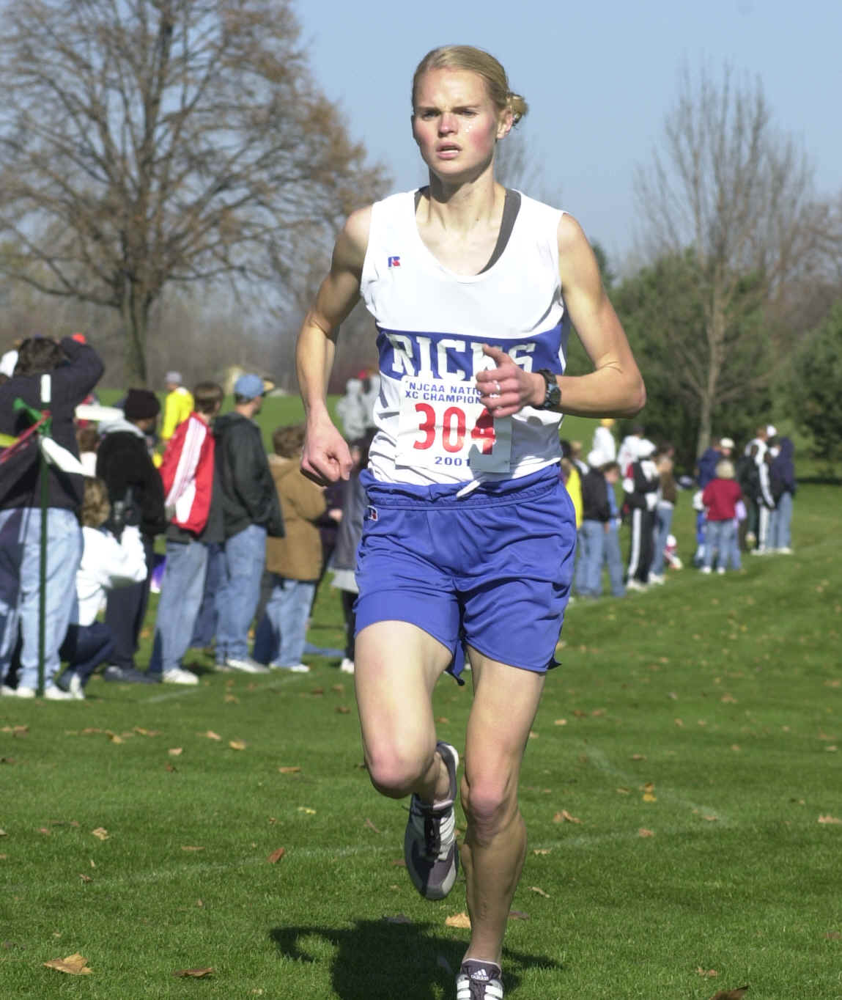
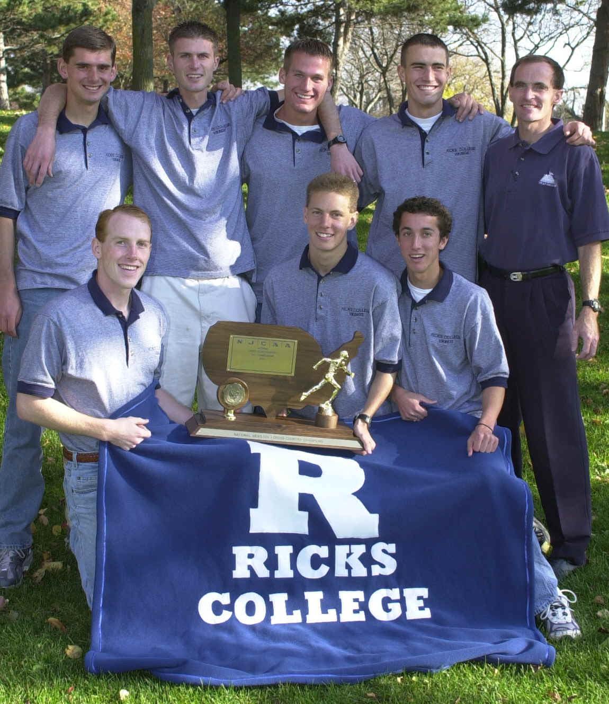

CROSS COUNTRY: Coach: Doug Stutz (10 Years)
2001 Women-Reg. 18 Champions and NJCAA Champions (7th consecutive year)
2001 Men-Reg. 18 Champions and NJCAA Champions (3nd consecutive year)
PREVIOUS RACE: NJCAA CHAMPIONSHIPS
November 10, 2001
Lansing, Michigan
The Ricks College cross country teams have repeated as NJCAA champions.
For the Lady Vikings, it's seven in a row. For the Viking men, its now three
straight.
| The Lady Vikings did what they do best; run as a group. Saturday morning in Lansing, MI, five Lady Vikings ran together behind a lead group of foreign athletes. A mile into the race, Ricks closed the gap on the leaders, and in the final mile, Angela Benson of Orem, UT, pulled away from her team mates, joined the lead group, then pulled away from them to win the individual title and First Team All American status. Her time was 18:24. Not far back, Lida Clapier of Salt Lake, finished sixth. Kim Conover of Gilbert, AZ, was eighth. Audrey Golightly of Preston, ID, was ninth. Kathrine Anderson of Fruit Heights, UT, as tenth. Those four earned All America Second Team honors. Third team All America went to Amy Conover of Twin Falls, ID. Finishing 26th was Emily Prestwich of Cedar City, UT. The Ricks team posted a score of 30 points, far ahead of second place Utah Valley State with 72 |  |
| The men's race was a nail biter for
Ricks. At the finish line, defending NJCAA Champion Jeff Davidson of Burley,
ID, crossed the finish line in sixth place, with Ryan Jenks of Blackfoot in
seventh, and David Woodbury of Idaho Falls in eighth. They were also the first
Americans across the finish line. The three of them were
barely a breath apart. All earned Second Team All America honors. Brett Larsen
of Las Vegas came in 20th, and Barry Jenks of Blackfoot was in 28th place. The
closeness of the group was just enough to give Ricks a four point win over
second place Central Arizona. Ricks scored 67 points, Central totaled 71. Ricks earned the award for best combined score and Doug Stutz was once again named Coach of the Year, capping off the final season of cross country at Ricks College. Coach Stutz was thrilled with the results. "Our girls were awesome. They dominated. Angie Benson ran a tremendous race. Our men won on the strength of those top three guys. This was a win of willpower. I'm so proud of these athletes. They simply would not be denied in our final race ever." |
 |
| . | |
RESULTS:
MEN
WOMEN
| 1-RICKS 67 2-CACC 71 3-Barton 105 4-N Idaho127 5-S Plains142 | 6-Jeff Davidson 25:38 7-Ryan Jenks 25:57 8-David Woodbury 26:00 20-Brett Larsen 26:58 28-Barry Jenks 27:11 29-Jake Puzey 27:19 52-Aaron Pease 28:34 | 1-RICKS 30 2-UVSC 72 3-CACC 98 4-Butler CC 104 5-El Paso CC 69 | 1-Angie Benson 18:24 6-Lida Clapier 18:49 8-Kim Conover 18:56 9-Audrey Golightly 18:56 10-Kath. Anderson 18:56 13-Amy Conover 19:26 20-Emily Prestwich 20:03 |
| ALL AMERICANS | ALL AMERICANS | ||
| SECOND TEAM | FIRST TEAM | ||
| Jeff Davidson | Angela Benson | ||
| Ryan Jenks | SECOND TEAM | ||
| David Woodbury | Lida Clapier | ||
| Kim Conover | |||
| Audrey Golightly | |||
| Kathrine Anderson | |||
| THIRD TEAM | |||
| Amy Conover |
October 27, 2001
Region 18 Womens' Championship, Rexburg, ID
Team Scores: Ricks 21, Utah Valley 39, Flathead Valley 85, CNCC inc
Utah Valley's Amanda Archuleta took the early lead in the women's
race, with a cluster of Lady Vikings close behind. About midway through,
Angie Benson took the lead and out-raced Archuleta to the finish line by ten
seconds, finishing with a time of 18:09. Lida Clapier took
third at 18:23, with Kathrine Anderson right behind her at 18:26.
Rounding out the Vikings top seven were Emily Prestwich, Audrey Golightly, Kim
Conover, and Amy Conover, all within a minute and four seconds of first
place. These Lady Vikings will go for a seventh consecutive national
championships.
October 27, 2001
Region 18 Mens' Championship, Rexburg, ID
Team Scores: Ricks 23, Utah Valley 39, Flathead Valley 84, CNCC 100
From start to finish, Ryan Jenks and David Woodbury led the field in the men's
final. Down the stretch, Jenks slipped past Woodbury for first place by
one second. Jenks time was 25:20, Woodbury 25:21. Utah Valley
Malcom Hassan was third, followed by Brett Winegar of Flathead Valley.
Defending Region 18 and NCAA champion Jeff Davidson continues to recover from
an injury, and finished fifth overall with a time of 26:13. Brett
Larsen, Barry Jenks, Jake Puzey, and Aaron Pease round out the Vikings top
seven.
October 12, 2001
Utah State Invitational, Logan, UT
Women's Scores: 1-Ricks 40, 2-Utah State 54,
3-Idaho State 75, 4-Utah 93, 5-Utah Valley 126
For the first time in many years (at least 10), the Ricks College women
won the team title at the Utah State University Invitational, finishing ahead
of 5 NCAA Division 1 schools and one other JC. Angie Benson(17:53.60) led a
strong front four finish for the Lady Vikings, coming in third individually.
Audrey Golightly(18:02.80), Lida Clapier(18:03.60), and Katherine
Anderson(18:12.70) finished in positions 6-7-8 to provide the upfront punch
needed to win. Angie, in what is beginning to be her typical style, started
out conservatively. She went through the first mile in about 20th place. She
began to move up one place at a time until she found herself in 3rd just past
the two mile mark. She did move up on the shoulder of the two lead runners
with 300m to go, but was unable to out kick them.
Men's Scores: 1-Utah State 22, 2-Utah 56,
3-Idaho State 57, 4-Ricks 92, 5-Valparaiso 145
The Viking men ran their best race of the year, good enough for
4th place. Ryan Jenks(23:36.90) ran with a lead pack of 8 throughout most of
the race, finishing in 6th. David Woodbury(24:24.10) went out a bit more
conservatively than in the past and finished in 17th. Jeff Davidson(24:29.50)
showed he is gaining fitness and confidence in returning from an injury by
finishing only 5 seconds in back of David in 20th place. Barry Jenks25:20.90)
and Brett Larsen(25:24.10) ran together for most of the race, helping each
other to season best performances while closing the gap between the Vikings
1st and 5th runners to under 2 minutes for the first time this
fall.
Coach Doug Stutz: "As a team, we are improving with each
race. We will try to improve the strength of our pack running through 7
runners. This should help build our confidence."
September 29, 2001
Big Cross Meet, Pasco, WA
Ricks College cross country traveled to Pasco, WA, for the Big Cross
Invitational Saturday. The Lady Vikings, six time defending NJCAA champions,
turned in a superb performance, finished second overall to Montana State, just
4 points behind the Lady Bobcats. Ricks finished ahead of NCAA schools Boise
State, Eastern Washington, and University of Idaho, to name a few. Top
individual for Ricks was Angie Benson in fifth place with a time of 18:42,
just seconds ahead of teammates Audrey Golightly and Kathrine Anderson who
each came in under 19 minutes. In all, Ricks had nine runners finish within
one minute of each other, and eleven runners in the top 31.
The men’s team finished in fifth place, with five runners crossing the
finish line within two minutes of each other. Ryan Jenks led the way with a
seventh place finish and a time of 25:49. David Woodbury came in twelfth at
25:59. Defending NJCAA champion Jeff Davidson raced for the first time this
season and recorded a time of 26:45, finishing 36th. Brett Larsen
and Barry Jenks rounded out the Vikings top five runners. Coach Doug Stutz ran
unattached and finished 19th with a time of 26:15.
Ricks was first among Junior Colleges in both races.
September 22, 2001
Montana Invitational, Missoula, MT
The first meet of the season saw a solid performance by the Lady Vikings,
finishing third overall behind Montana and Montana State. Ricks
was led by
Lida Clapier's eighth place finish with a time of 23:04.2.
Angie Benson finished eleventh with a time of 23:08.44. Katherine
Anderson was 19th, Emily Prestwich 23rd, and Audrey Golightly 24th, all under
24 minutes.
The men finished sixth, behind Weber State, Idaho State, Utah, Montana State,
and Montana. Ryan Jenks had a solid race, finishing 11th with a time of
25:59.25. David Woodbury came in 17th in a time of 26:04.76. They
were the only Viking men in the top 35 and under 27 minutes.